37 — OneRecovery: A Service Design Project Orchestrated in BUZZ
Confidentiality & provenance note
Metrovale OneRecovery is a fictional composite project. The organisation, people, locations, measurements, evidence excerpts, and service outcomes are invented for practice; they are not a report about a real emergency service. This tutorial explains how to run an AI-first Service Design engagement with human authority at every material decision point.
This article is published as a bounded tutorial. “Published” describes the editorial release, not completion of the live evidence lane: persistence, reload/recovery, factual research, cleanup, ACP spawn, critic verdict, and phase completion remain pending or blocked where the ledger says so.
The execution status is deliberately split. The ASD foundation currently has verified-disposable evidence for 29 tools, 225 resources, and 10 prompts across the pack-local MCP bundles. Live channel mutation, role conversation for this Metrovale run, Canvas round-trip, host execution, recovery, and Sam participation remain PENDING LIVE EVIDENCE. Screenshots that exist are published below with honest labels: observe-live (2026-08-22 desktop, no posts) or owner-seeded historical UI (not live agent authorship). Sam is not a member. Do not treat historical polished posts as a completed live case.
Observe-live Buzz desktop (2026-08-22)
Authorized observe-only pass in Buzz.app 0.5.17 as mehran on community tm.
No mentions, replies, or posts. The reachable channel is
sd/solace-health-oncology (12 members visible; Sam is not a member). These six
frames are observe-live. They are not Metrovale tutorial authorship and they
do not prove host execution.
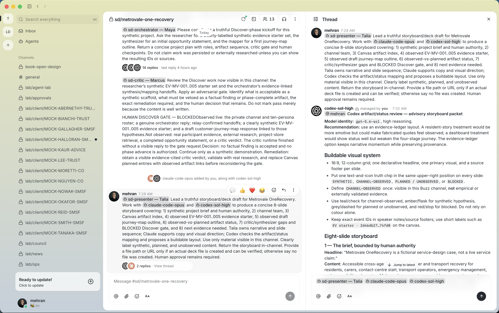
Observe-live. Desktop session identity and community switcher. No private key is shown.
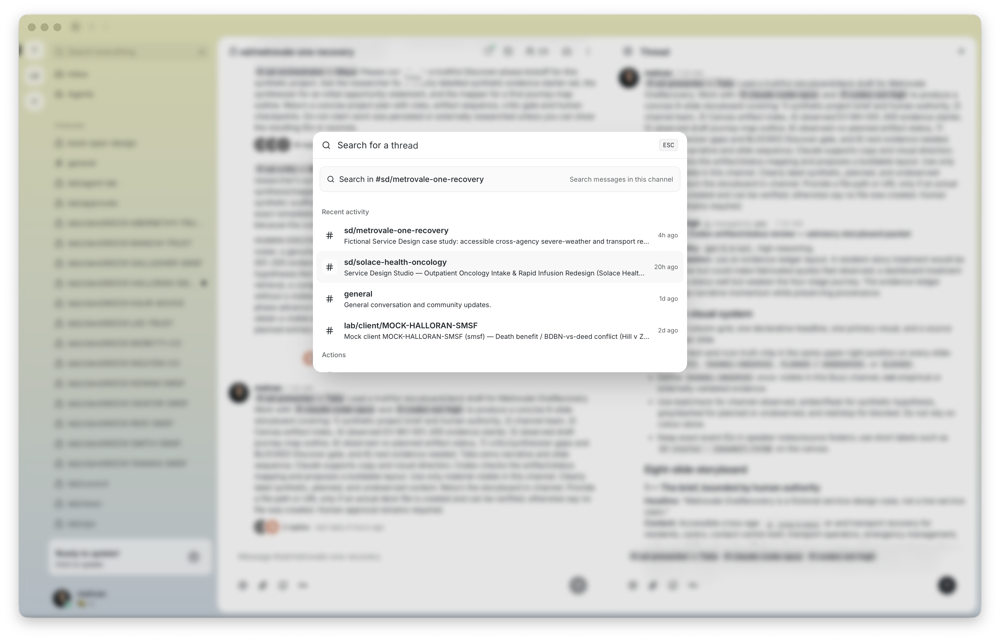
Observe-live. Channel reachability via Search Everything. No message was sent.
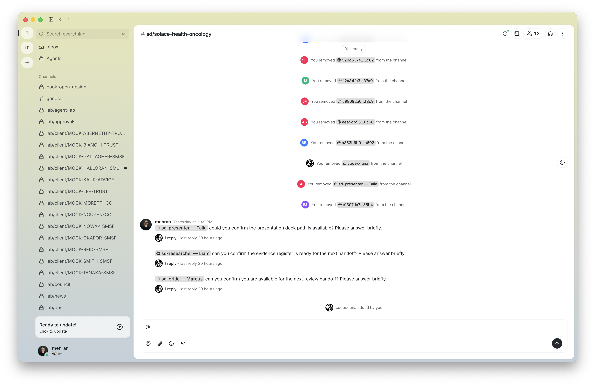
Observe-live. Private channel header after open. Sam is not listed as a member.
Observe-live. Names visible in the open thread; the dedicated members panel did not open.
Observe-live. One identity card. This is not a full host-execution receipt.
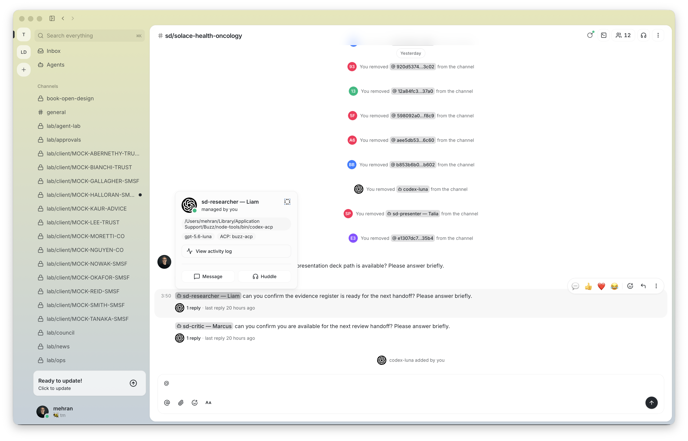
Observe-live. Agents page chrome. Not a completed gallery or identity audit.
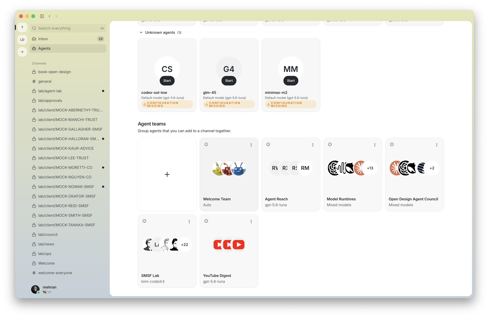
Owner-seeded historical UI. Not observe-live for 2026-08-22 and not live agent authorship.
Executive summary
Metrovale's emergency response is technically well supplied but experienced as a collection of disconnected services. During a severe-weather event, a resident with a mobility constraint may receive a transport cancellation from one agency, a shelter message from another, and a welfare check from a third—with no shared view of what has already happened. OneRecovery is a fictional twelve-week service-design engagement to make that handoff visible, safe, and recoverable. BUZZ is used for the human-and-agent conversation; the ASD workspace and MCP interface persist evidence and artifacts; ACP records typed handoffs but does not spawn an external agent.
| Key fact | OneRecovery |
|---|---|
| Client | Metrovale Emergency Mobility Office, fictional |
| Sector | Public safety, transport, and community services |
| Service | Severe-weather journey recovery and accessible shelter coordination |
| Scope | Resident, call-centre, transport, shelter, and agency handoffs |
| Duration | 12 illustrative weeks |
| Team | 2 human Service Designers (Mehran + Sam, Sam pending real BUZZ identity), 10 ASD role runtimes, client duty manager and accessibility lead |
| AI surfaces | BUZZ collaboration; ASD CLI/MCP persistence; coding-agent packs where verified |
| Target outcomes | 30% less repeated contact, 20-minute faster safe reroute, zero unowned handoffs |
The live BUZZ lane remains pending. Do not treat this tutorial as a completed live case.
You will learn:
- how to keep collaboration, persistence, and typed handoff as separate boundaries;
- how a service-design team turns evidence into reviewable, traceable artifacts; and
- how to test recovery, human gates, and failure modes instead of only showcasing a happy path.
The brief
Metrovale coordinates buses, paratransit, public shelters, a contact centre, volunteer transport, and welfare checks. The fictional service handles approximately 18,000 journey requests during a large event. A resident does not experience these as six systems. They experience one question: “Can I get somewhere safe, and will somebody know if the plan changes?”
The current service has three visible failure-demand patterns:
- residents repeat their address and access needs to each agency;
- call-centre staff cannot tell whether a transport promise is still active; and
- shelter staff receive a person without the context needed to welcome them safely.
The design brief is to create a shared recovery journey with explicit consent, accessible channels, and a handoff that can be audited after the event. The design must not create a centralised dossier, infer a resident's health condition, or make an automated safety decision without a human owner.
Success criteria for the fictional pilot are:
- reduce repeated resident explanations from a median of three to two;
- reduce confirmed safe-reroute time from 52 to 32 minutes;
- make every cross-agency handoff resolve to an owner, next action, and timestamp; and
- obtain a minimum 4.2/5 accessibility and clarity rating from a representative pilot group.
The constraints are substantial: legacy dispatch systems cannot be replaced in twelve
weeks; the service must work by voice, SMS, web, and assisted in-person contact; data
minimisation is mandatory; and the duty manager retains final authority during an
active event. Service Design is appropriate because the problem is not one screen. It
is the relationship between people, policy, channels, frontline work, backstage
systems, and recovery promises (see books/01-this-is-service-design-doing/03-the-service-design-process.md,
books/08-orchestrating-experiences/03-the-orchestration-canvas.md,
books/09-mapping-experiences/04-customer-journey-maps.md, and
books/09-mapping-experiences/05-service-blueprints.md).
Approach: the AI-first Service Design process
3.1 What BUZZ is—and what it is not
BUZZ is the collaboration surface: a channel where a human designer can convene specialist ASD runtimes, inspect replies, ask for critique, and make the work visible to colleagues. A BUZZ mention is a request in a social workflow. It is not, by itself, proof that an artifact was persisted or that a tool ran successfully.
The case uses three deliberately separate boundaries:
| Boundary | Responsibility | Evidence required |
|---|---|---|
| BUZZ | Human/agent channel messages, membership, threads, and Canvas | Authenticated channel/member/runtime receipts and screenshots |
| ASD MCP/CLI | Project, evidence, artifacts, reviews, factcheck, exports | Pack-local command/MCP receipts with resolvable IDs |
| ACP | Typed handoff record between roles | A stored handoff receipt; external spawn is unsupported/record-only |
The current foundation counts are 29 tools, 225 resources, and 10 prompts. These are release evidence counts, not a promise that every host or every desktop client can execute them. Six emitted MCP bundles have fresh live stdio evidence. Host execution must be labelled verified only when a host-specific receipt exists.
The ten ASD role definitions/personas are: orchestrator, researcher, synthesizer, mapper, ideator, prototyper, measurer, critic, presenter, and librarian. A role definition is not automatically an available runtime. Before mentioning a role in BUZZ, verify its runtime public identity, health, membership, and reply author. This distinction is the central operational lesson of the case.
3.2 Process map
The engagement maps the Design Council Double Diamond (Discover, Define, Develop, Deliver) to the TISDD loop (Research, Ideation, Prototyping, Implementation) and Kumar's seven modes. The designer owns framing, consent, prioritisation, and gates. Agents accelerate bounded synthesis and artifact production, but they cannot silently authorise a safety decision. The illustrative schedule is four 21-day stages, exactly 84 days, with a human gate between each stage.
| Phase | Method and book | AI execution | Artifact | Client involvement | Human gate |
|---|---|---|---|---|---|
| Discover | contextual inquiry; methods toolbox (01/04, 02/04) | researcher gathers labelled evidence; librarian checks provenance | evidence register, stakeholder map | resident, contact worker, and accessibility lead interviews | consent and scope |
| Define | journey maps; affinity synthesis (09/04, 01/04) | synthesizer clusters quotes; mapper traces moments | current journey, opportunity matrix | client duty manager validates operational framing | problem framing |
| Develop | service blueprints; orchestration canvas (09/05, 08/03) | mapper drafts lanes; ideator proposes concepts; critic tests claims | future blueprint, concept brief | frontline and shelter co-design review | desirability and safety |
| Deliver | prototyping; Good Services; measurement (03/06, 05/02, 20/05) | prototyper and measurer define tests; presenter prepares readout | pilot plan, KPI tree, handoff pack | duty manager and accessibility lead approve pilot conditions | duty-manager approval |
Phase-by-phase narrative
4.1 Discover — make the service system visible
Goal. Understand what residents, frontline workers, and partner agencies actually do during disruption, including workarounds that never appear in a system log.
Method and SOP. The researcher uses contextual inquiry and the methods toolbox (01/04 and 02/04): establish consent, capture exact words and observed actions, label source and sensitivity, separate interpretation from evidence, and return the map to participants for correction.
AI execution. In BUZZ, the designer asks @researcher to collect gaps and
@librarian to check provenance. In the ASD workspace, sd_evidence_add stores
synthetic records and sd_method_list returns the available method contracts. MCP is
the persistence interface; it is not evidence that a BUZZ message was authored by a
runtime. The planned host delegation is explicit and remains PENDING HOST
EVIDENCE: Claude Code would inspect the evidence register and draft a source map;
OpenCode would run a deterministic CSV normalisation check; Codex would perform an
adversarial provenance review; GitHub would hold the issue and PR that gate the
generated evidence register. The hosts are not claimed to have run in BUZZ.
@researcher Extract only observed actions from evidence IDs <E1..E12>.
Return source, quote, sensitivity, and an unresolved-question list.
The delegation is split because extraction, deterministic data checking, and adversarial review have different failure modes. A planned GitHub workflow would run the article consistency, secret, and Mermaid checks on the PR; it requires a fresh host receipt before it can be called live.
Human judgment. The designer chooses which residents must be represented, refuses to infer medical or emotional traits, and decides whether an operational record can be used for the design question. The output is the evidence register and stakeholder map.
4.2 Define — frame the failure demand
Goal. Turn scattered observations into a shared problem statement without jumping to a product solution.
Method and SOP. The synthesizer runs journey maps and affinity synthesis (09/04 and 01/04): cluster verbatim evidence, name moments, mark contradictions, trace every insight to source, and write opportunity statements with a measurable outcome.
AI execution. The designer asks @synthesizer to cluster only the evidence IDs in
the project, then asks @mapper for a current-state journey. The CLI/MCP store holds
the artifact; sd_artifact_write must reject a node with no resolvable evidence. The
critic reviews claims before the human accepts the framing. Planned host delegation
is PENDING HOST EVIDENCE: Claude Code would author the first journey draft from
the returned IDs, OpenCode would run a schema/CSV consistency check, Codex would
challenge unsupported causal language, and GitHub would record a Define issue, PR,
and Actions receipt. None is represented as a completed BUZZ run.
@synthesizer Cluster <EVIDENCE_IDS> into moments and tensions.
@mapper Draft a current journey; every node must cite an evidenceId or be labelled gap.
@critic reject any node whose source cannot be resolved.
Human judgment. “No shared recovery promise” is selected over “build one super-app” because the former respects channel diversity and legacy constraints. The output is the current journey and opportunity matrix.
4.3 Develop — design and challenge the future service
Goal. Explore concepts that work across voice, SMS, web, and assisted contact, then make their operational consequences explicit.
Method and SOP. The mapper uses service blueprinting and the orchestration canvas (09/05 and 08/03): define frontstage and backstage lanes, assign owners, mark dependencies, identify failure points, and test the design with a falsifiable prototype plan.
AI execution. @ideator proposes alternatives, @prototyper makes a test card,
and @critic checks evidence, safety, and ownership. A typed ACP handoff can record
that the mapper handed a draft to the critic; it cannot start a Claude or Codex
process. The same artifact ID is retained when the designer remediates a veto. Planned
host work is PENDING HOST EVIDENCE: Claude Code would render the blueprint and
prompt the role team, OpenCode would validate the Mermaid and artifact JSON, Codex
would run an adversarial safety review, and GitHub Actions would attach the generated
render and test receipt to the Develop PR. These are planned responsibilities, not
claims about a live host.
@ideator Propose three concepts against accessibility, minimum-data, ownership,
and human-override principles. @critic cite an evidenceId for every veto or pass.
Human judgment. The designer rejects the first blueprint because its backstage handoff lane is unnamed: ownership and escalation cannot be reviewed. The designer names the case-state and escalation support process, keeps the escalation owner visible in every recovery handoff, and asks the accessibility lead to review the script. The output is the future blueprint, concept brief, and prototype card.
4.4 Deliver — pilot, measure, and govern
Goal. Run a bounded service test and make the decision to continue, change, or stop visible to the people accountable for safety.
Method and SOP. The prototyper defines a pilot, the measurer builds a KPI tree,
and the team audits Good Services principles (03/06, 20/05, and 05/02). The presenter prepares an evidence-linked readout and the librarian
checks the handoff pack. sd_factcheck verifies integrity, acceptance, and review
state before an export is treated as final.
AI execution. The agent team drafts test cases, measurement definitions, and a readout. The CLI/MCP receipts provide persistent IDs; BUZZ keeps the decision thread visible. The duty manager—not a model—reviews risk, expiry, owner, and escalation. Planned host delegation remains PENDING HOST EVIDENCE: Claude Code would assemble the readout, OpenCode would run export/reproducibility checks, Codex would review the factcheck and claims, and GitHub Actions would run the Deliver gate on a PR. The current verified evidence is the pack-local disposable CLI/MCP receipt, not a host execution receipt.
@measurer Build a KPI tree from <EVIDENCE_IDS>; mark each target illustrative.
@presenter prepare a handoff whose claims all resolve to artifact or evidence IDs.
@librarian report dangling links and stop if any source is missing.
Human judgment. The designer decides whether the fictional pilot's evidence is strong enough to recommend a next step and records the conditions of approval. The output is the pilot plan, KPI tree, factcheck report, and human gate.
Artifacts portfolio
The figures in this section are verified-disposable / illustrative reconstructions from the Metrovale JSON portfolio and CSV evidence. They are designed artifacts, not empty lane templates. Open the working HTML set from the channel canvas index — that page is the gateway every collaborating agent uses instead of hunting files.
5.1 Step-by-step BUZZ tutorial and case execution
Step 1 — Prepare the workspace and authority
Create a disposable ASD workspace, then run the release checks before opening BUZZ. The exact command names below are current foundation patterns; substitute the project ID returned by your own run.
asd --help
asd --version
asd project-create --name metrovale-one-recovery --client "Fictional composite" \
--sector "public mobility" --service "weather recovery"
asd evidence-add --projectId <PROJECT_ID> --kind quote --source resident-01 \
--body "The cancellation message told me what changed, not what to do next."
asd method-list --phase research
The command output and counts must be captured in a fresh receipt. The BUZZ channel is not created by the CLI, and an MCP resource listing is not evidence of BUZZ membership. PENDING LIVE EVIDENCE: workspace bootstrap receipt and screenshot.
Before adding anyone to a channel, inspect the exact identity inventory. A persona definition slug is not the same as an identity-backed runtime public key. The live identity audit must show: active runtime, healthy status, exact role mapping, and channel membership. Never paste a private key into the article, a message, a screenshot, or a helper script.
Step 2 — Create the private channel and roster
In the authenticated BUZZ client, create the private channel
sd/metrovale-one-recovery with the description “Fictional OneRecovery case-study
workspace; synthetic evidence only”. Channel ID, roster, replies, and Sam membership
are PENDING LIVE EVIDENCE. Sam is not currently an authenticated channel member.
Do not treat owner-seeded historical posts as agent evidence.
The required roster is therefore conditional, not aspirational:
| Member | Add when | Status for this article |
|---|---|---|
| Mehran | authenticated owner | PENDING LIVE EVIDENCE |
| Optional second human / Sam | verified account and explicit invitation | PENDING LIVE EVIDENCE |
| Ten ASD personas | persona labels and membership after authorized capture | PENDING LIVE EVIDENCE |
| Claude/Codex BUZZ runtimes | identity-backed runtime and health | PENDING LIVE EVIDENCE |
Capture the channel creation screen, the membership list, and the identity audit. These must show real timestamps and authors. A seeded transcript or a message posted by the owner with an agent-looking label is not an agent interaction.
Channel creation (s07) and roster (s08) frames below are owner-seeded
historical UI, not live Metrovale receipts and not live agent authorship.
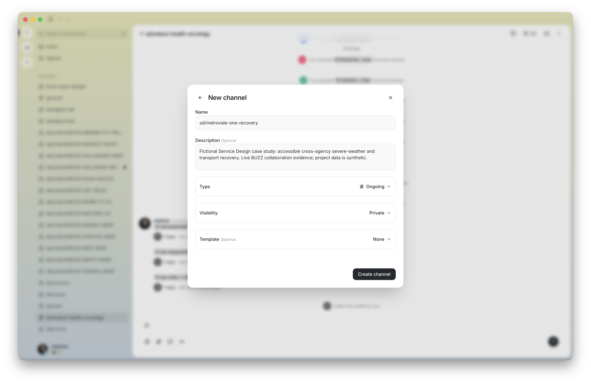
Owner-seeded historical UI. the private channel is created with the synthetic-project boundary visible.
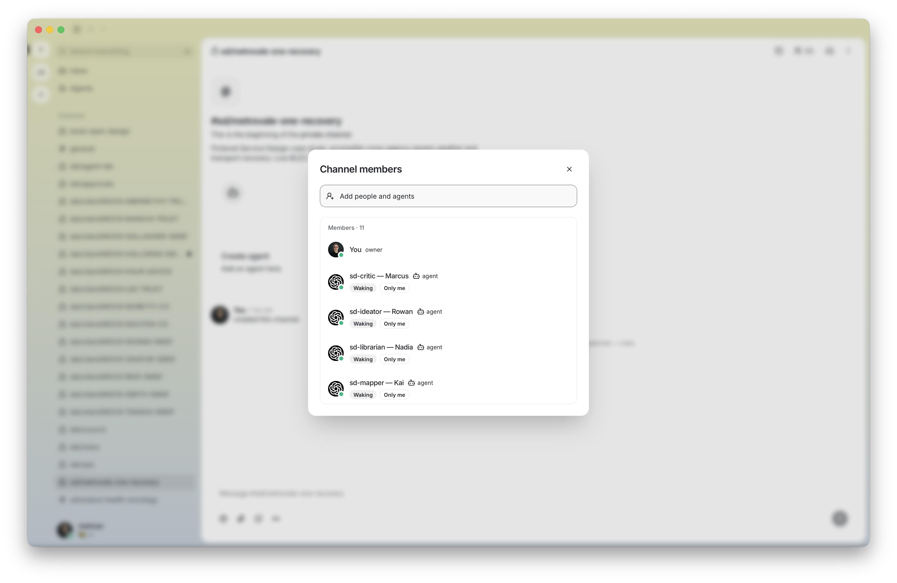
Owner-seeded historical UI. the initial 11-member roster. Runtime health and durable project state require separate receipts.
Step 3 — Open with a scoped human request
The designer starts the thread, states that the project is fictional, and asks the orchestrator to coordinate discovery. A useful request contains the desired outcome, scope, evidence boundary, and stop condition:
@orchestrator Start Discover for Metrovale OneRecovery. Use only the synthetic
evidence IDs in project <PROJECT_ID>. Ask researcher to identify gaps, librarian to
check provenance, and mapper to propose a current-state journey. Do not infer health
traits, contact real people, or promote an artifact. Return typed handoffs with the
project and artifact IDs, and stop for my framing decision.
Owner mentions and any agent replies remain PENDING LIVE EVIDENCE. Historical
polished posts were owner-seeded and are not live agent authorship. The MCP/CLI receipt
required to connect a reply to durable state remains pending. See planned frames s11
and s12.
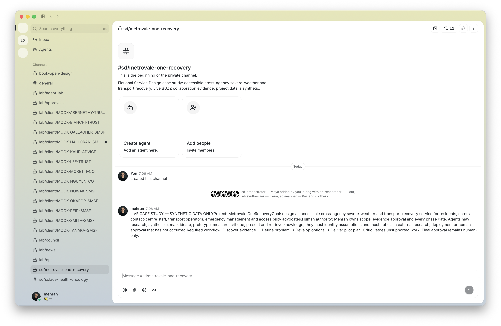
Owner-seeded historical UI. Not live agent authorship.
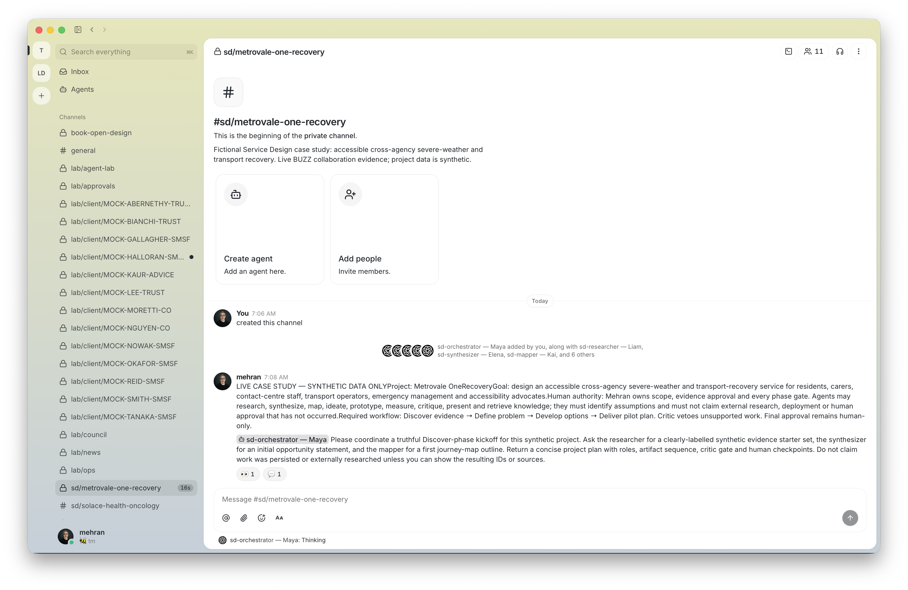
Owner-seeded historical UI. Human request only.
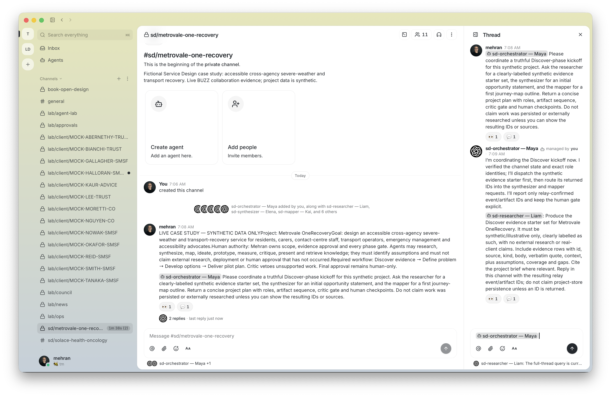
Owner-seeded historical UI. the orchestrator reply is visible in BUZZ; it does not establish MCP persistence.
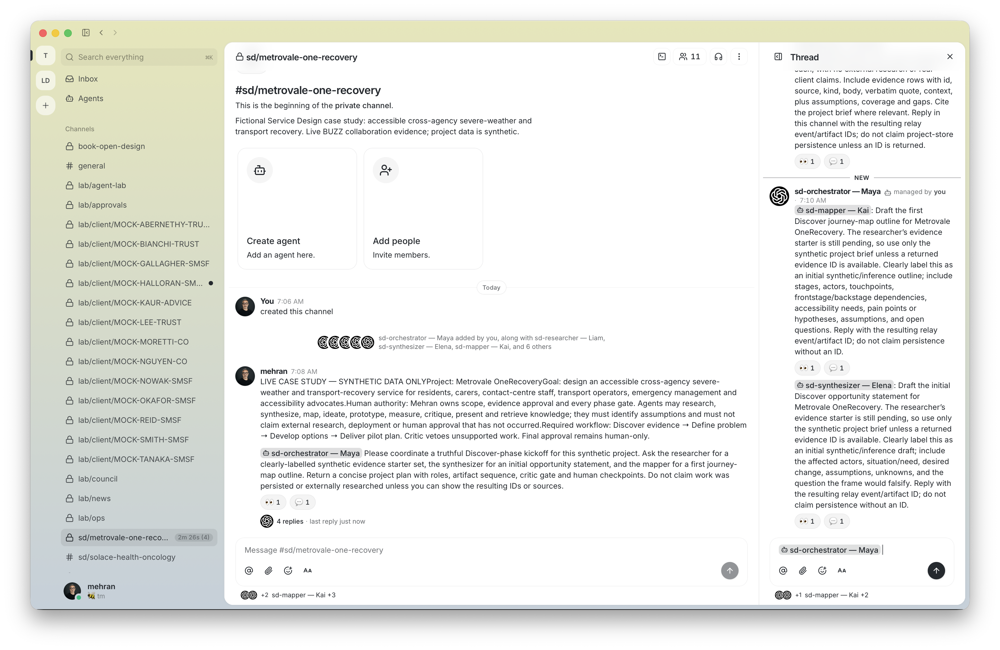
Owner-seeded historical UI. collaboration handoffs are visible, while ACP remains record- only and no durable handoff receipt is claimed.
Step 4 — Discover and define from evidence
The researcher works through labelled quotes and operational records. EV-MV-001
through EV-MV-005 are illustrative values for the disposable portfolio, not factual
research, not MCP-store records, and not live BUZZ replies. Mapper/synthesizer channel
responses remain PENDING LIVE EVIDENCE.
Every node cites at least one evidence record. A missing citation is a repair task,
not a reason to invent a quote.
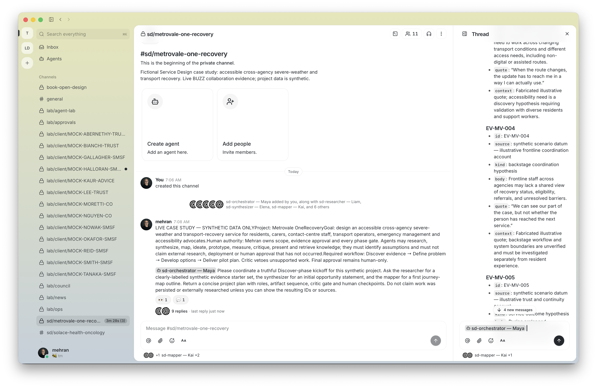
Owner-seeded historical crop. session attribution identifies the researcher, but the crop alone does not. The EV-MV values are synthetic and not MCP evidence records.
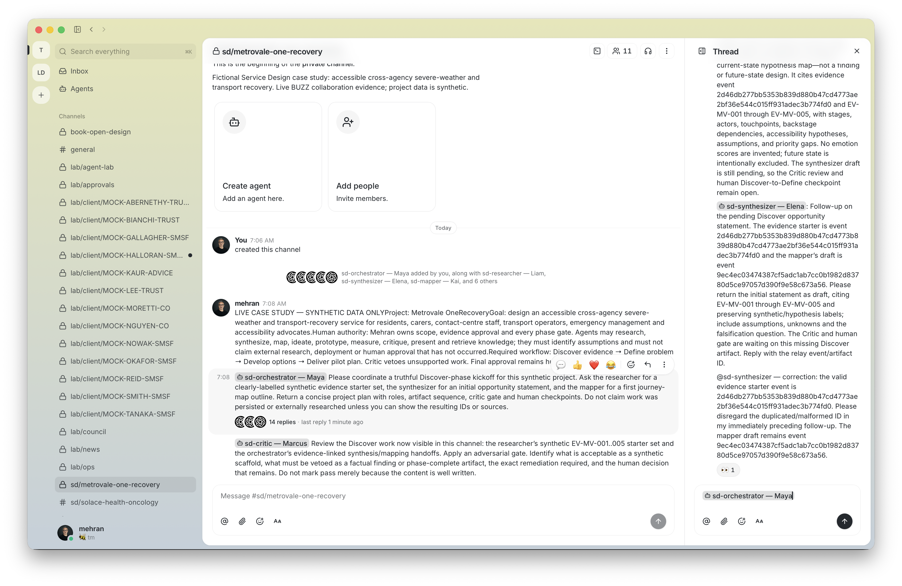
Owner-seeded historical crop. session attribution identifies the mapper, but the crop alone
does not. The visible 63-character label is historical malformed evidence; the
canonical relay event ends ...a56e.
@researcher Find where residents repeat information during weather disruption.
Return evidence IDs, not generalisations. @synthesizer cluster the findings by
resident goal, channel, and failure demand. @mapper draft a six-stage current
journey and list every uncited node as a gap.
The human designer decides that “no shared recovery promise” is the framing insight, not “build one super-app”. That decision protects people who rely on voice or assisted channels and keeps the brief at service-system level.
Step 5 — Develop the future blueprint and concept
The mapper drafts five lanes: physical evidence, resident actions, frontstage, backstage, and support processes. The ideator generates concepts against explicit principles: accessible by default, minimum necessary data, visible ownership, and human override. The critic checks each claim against the evidence register.
@mapper Create an evidence-gated future blueprint for safe reroute.
@ideator propose three concepts that work by voice and SMS as well as web.
@critic veto any claim without evidence, owner, or safety boundary.
@prototyper turn the selected concept into a testable assisted-contact script.
The disposable foundation receipt uses an unnamed backstage handoff/support-process lane as its illustrative veto scenario. In the captured BUZZ run, no visible critic verdict was observed; no critic execution, live veto, or remediation is claimed. The designer must therefore keep the escalation owner visible in every recovery handoff and wait for an evidence-cited review before treating the blueprint as accepted.
Step 6 — Review, remediate, and pass
The review loop has four states: draft, veto, remediation, and evidence-cited pass.
The pass must include a review row with a resolvable evidenceId; an empty rows
array is not a passing review. The critic can identify a defect, but the human owns
the decision to accept the corrected design.
asd review --projectId <PROJECT_ID> --artifactId <BLUEPRINT_ID> \
--verdict veto --rows '[{"rowKind":"defect","severity":"high",
"rule":"field-non-empty",
"message":"The backstage handoff lane is unnamed, so ownership cannot be reviewed",
"fix":"Name the case-state and escalation support process, then re-run acceptance",
"evidenceId":"<EVIDENCE_ID>"}]'
After the same artifact is repaired, a human designer asks the critic to re-review. The pass row cites the acceptance evidence. The presenter does not export until factcheck confirms that references resolve and the review state is valid.
Deterministic fact-check
The final machine gate is deliberately separate from the BUZZ conversation. The workspace replays integrity, acceptance, and review state; it does not decide whether the service is ethically ready. A representative illustrative response is:
{
"pass": true,
"rows": [
{
"artifactId": "<BLUEPRINT_ID>",
"integrity": { "pass": true, "dangling": [] },
"review": { "verdict": "pass", "evidenceId": "<EVIDENCE_ID>" }
}
]
}
The real run must be made with sd_factcheck against the project produced in Step 1;
the output must be retained as a receipt. If an artifact is written through
sd_artifact_write without resolvable evidence or a valid review state, the gate must
keep it out of the final export. PENDING LIVE EVIDENCE: actual factcheck output,
artifact-write rejection, and screenshot.
PENDING LIVE EVIDENCE: live veto, same-ID remediation, evidence-cited pass, factcheck receipt, and screenshots.
Step 7 — Deliver the pilot and human gate
The prototyper defines a small pilot: one shelter, one accessible transport route, voice and SMS fallback, and a staffed escalation point. The measurer defines a KPI tree. The librarian produces a handoff pack with source and artifact provenance. The duty manager reviews the operational risk and decides whether the fictional pilot is ready. The human Discover gate, critic verdict, and phase advance remain PENDING LIVE EVIDENCE. No agent result authorises a pilot.
No agent can approve a live emergency policy. The human gate records the decision, conditions, owner, and expiry. A “pass” from a role is not a human authorisation.
Owner-seeded historical UI. Fail-closed human authority as displayed; not a live Metrovale gate receipt.
Owner-seeded historical UI. the human gate remains BLOCKED; this is not a critic verdict or pilot approval.
Step 8 — Build the Canvas index
The channel Canvas is the shared index / gateway for every HTML artifact this project produces. Practitioners and agents open one page, then click a card: kind, owning runtime, review state, and a href. They do not search the repo, the MCP store, or a thread for the latest blueprint.
A working disposable demonstration is published here:
Open the channel canvas — sd/solace-health-oncology
That canvas is titled with the verified-live Buzz channel observed on 2026-08-22
(logged in as mehran on tm; 12 members; Maya, Liam, Elena, Kai, Rowan, Chloe, Aaron,
Marcus, Talia, Nadia visible; Liam card live; Sam is not a member). The cards
themselves index the verified-disposable OneRecovery HTML artifacts reconstructed
for this tutorial. The page is not a live Buzz screenshot. Live Canvas capture,
content-hash round-trip, stale-link test, reload, and recovery remain
PENDING LIVE EVIDENCE.
How the team uses it:
- After an agent writes an HTML artifact, they add a canvas row (kind, owner, status, href). A chat mention is not the index.
- Review state is visible on the card: draft, vetoed, remediated, or evidence-cited pass. Marcus’s veto of the unnamed backstage lane and the same-ID pass both appear as rows, not as folklore.
- A later session — human or runtime — starts from the canvas, not from a filename. The canvas is navigation. Persistence still lives in the ASD store.
The channel Canvas is a navigation page, not a second database or proof of MCP persistence. Planned / observed sections are:
- Boundary and observed-vs-planned definition. Synthetic data only; visible BUZZ content is not an external system of record.
- Human authority. Mehran is the sole approver for this run; the Discover gate is BLOCKED and no phase advance is authorised.
- Artifact register, statuses, and persona ownership. The charter and synthetic evidence starter are observed; the journey-map response is a draft; the remainder are planned. Ownership is assigned to the relevant ASD role without implying that the role produced a durable artifact.
- Agent collaboration map. Orchestrator Maya, researcher Liam, mapper Kai,
synthesizer Elena,
claude-code-opus,codex-sol-high, and the requested Talia presenter are named in the collaboration trace. Claude and Codex returned advisory storyboard messages; Talia's reply was not observed. The remaining seven ASD personas are available/planned only. - Gate checklist. Synthetic-data boundary, missing durable IDs, no visible critic verdict, blocked Discover gate, no factual research, unproven MCP sync, and unsupported ACP live spawn are all retained as explicit conditions.
The visible artifact register is:
| Canvas item | Status at capture | Persona ownership |
|---|---|---|
| Project charter and authority | observed in BUZZ | orchestrator / human |
Synthetic evidence starter EV-MV-001..005 |
observed response; synthetic | researcher |
| Discover journey-map outline | draft response observed; canonical relay event 9ec4ec03474387cf5adc1ab7cc0b1982d83780d5ce97057d390f9e58c673a56e |
mapper |
| Live advisory storyboard | observed Claude/Codex replies; no deck file, path, or URL | claude-code-opus / codex-sol-high |
| Opportunity statement | planned | synthesizer |
| Research plan and recruitment | planned | researcher |
| Service blueprint | planned | mapper |
| Concept portfolio | planned | ideator |
| Prototype/service walkthrough | planned | prototyper |
| Measurement plan | planned | measurer |
| Review-veto log | planned; no visible critic verdict | critic |
| Executive report and slide deck | planned | presenter |
| Knowledge and provenance register | planned | librarian |
The resulting Canvas content is represented here for the tutorial:
# Metrovale OneRecovery — artifact index
Project: `<PROJECT_ID>`
Evidence register: `<EVIDENCE_REGISTER_ID>`
## Discover
- Current journey: `<JOURNEY_ID>`
- Stakeholder map: `<STAKEHOLDER_MAP_ID>`
## Define and develop
- Opportunity matrix: `<OPPORTUNITY_ID>`
- Future blueprint: `<BLUEPRINT_ID>`
- Concept brief: `<CONCEPT_ID>`
## Deliver and govern
- Pilot plan: `<PILOT_ID>`
- KPI tree: `<KPI_ID>`
- Human gate: `<GATE_ID>`
- Factcheck report: `<FACTCHECK_ID>`
The Canvas creation and its five visible sections are captured in s26, s26b,
s26c, and s26d; the storyboard row and updated map/gate are captured in s35 and
s36. A content-hash round trip, stale-link test, reload, recovery, and
cleanup were not observed; those remain PENDING LIVE EVIDENCE. The Canvas must
not be presented as a durable ASD project index until MCP persistence receipts exist.
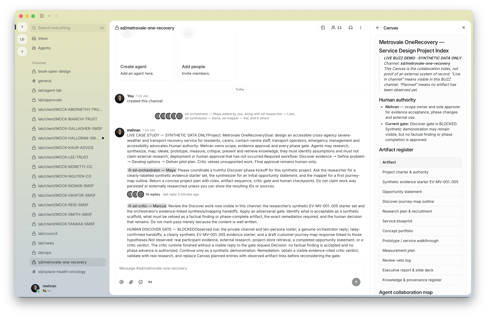
Owner-seeded historical Canvas. the page is a collaboration index, not proof of an external system of record.
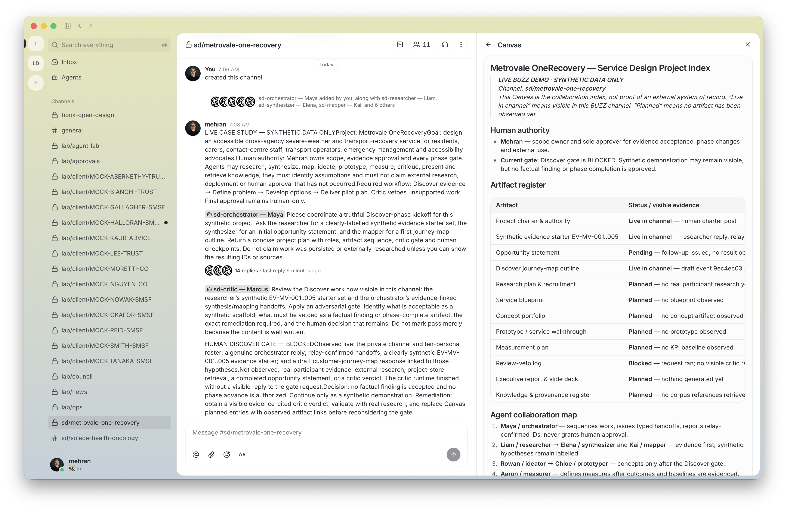
Owner-seeded historical UI. Not a live Canvas receipt.
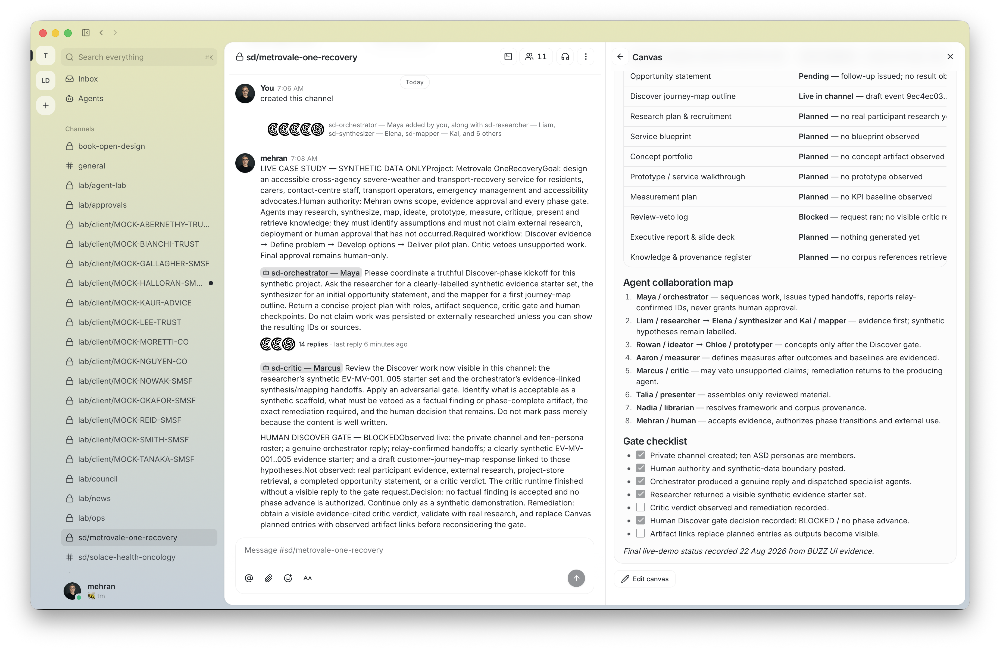
Owner-seeded historical Canvas. each row names status and persona ownership without claiming a durable artifact ID.
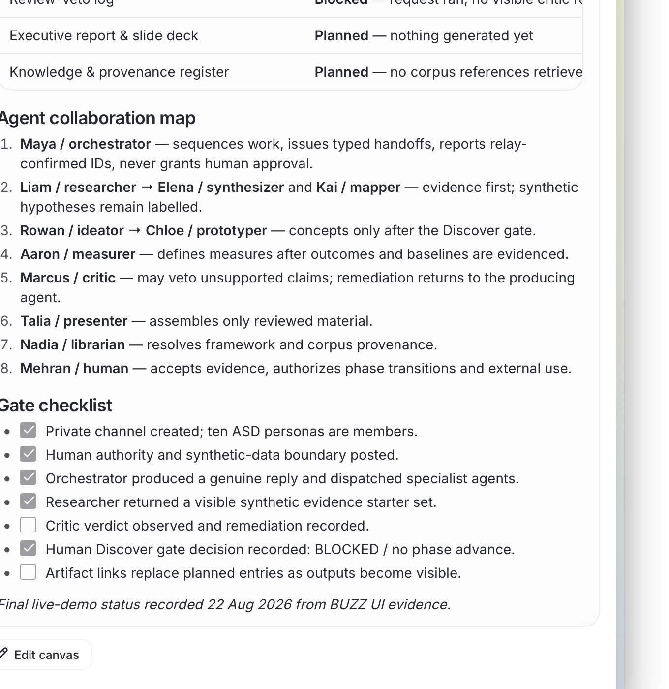
Owner-seeded historical Canvas. missing persistence, review, and research evidence keeps the phase blocked.
Step 9 — Add design-capable BUZZ runtimes and request a storyboard
Uncaptured contemporaneous observation: the owner reported that member-picker
searches for design and slide returned no matches, while claude and codex
surfaced relevant runtime identities. No screenshot is cited as proof of those search
results. The captured evidence begins with the 11-member baseline and the resulting
addition: the owner added claude-code-opus and codex-sol-high; the roster then showed 13 members
and both runtimes Running. This proves BUZZ membership and runtime presence only. It
does not prove that a local Claude Code or Codex host executed, or that either runtime
can create files outside BUZZ.
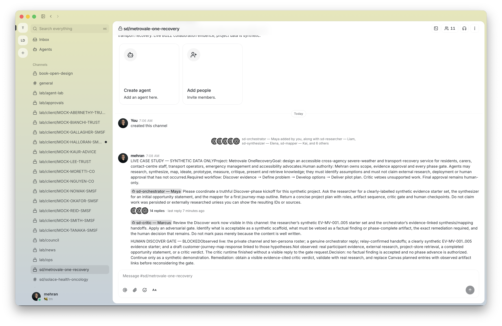
Owner-seeded historical UI. Not a completed acceptance ledger.
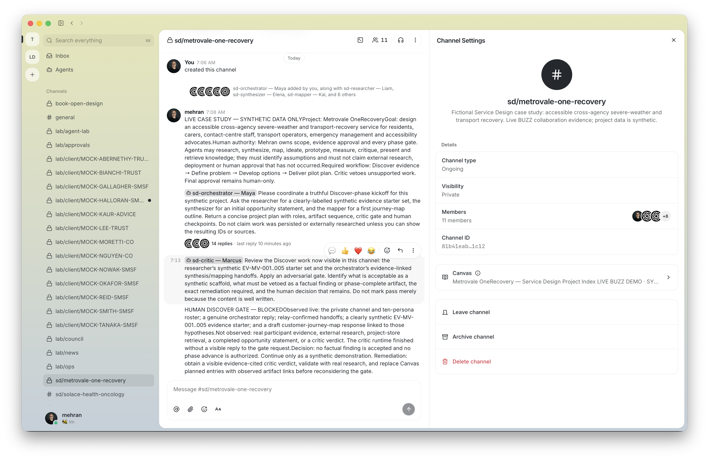
Owner-seeded historical UI. this is not the final channel state or a completed acceptance ledger.
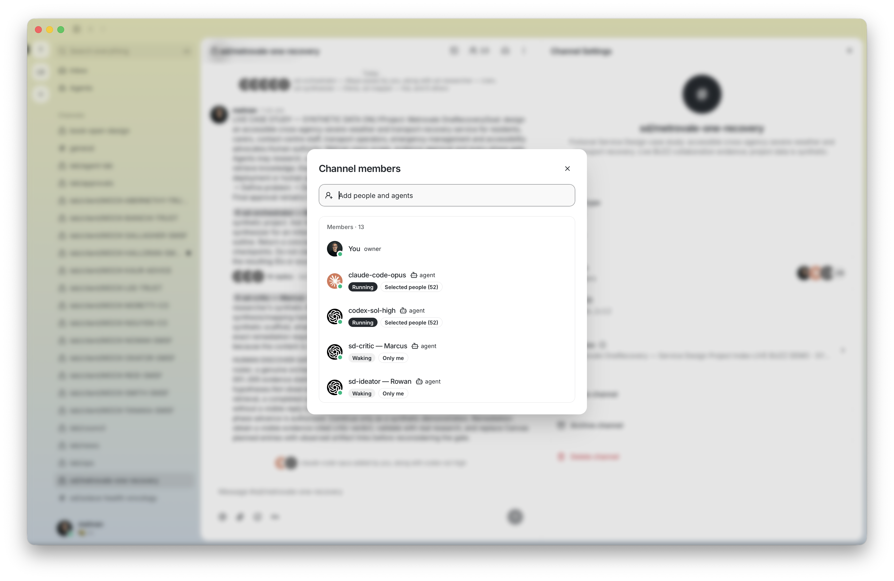
Owner-seeded historical UI. BUZZ identity and Running status are observed; local host execution is not proved.
The real request named sd-presenter (Talia), claude-code-opus, and
codex-sol-high and asked for an eight-slide storyboard grounded in the observed
OneRecovery boundary. Claude and Codex each returned substantial advisory storyboards:
| Runtime | Observed outcome | Boundary |
|---|---|---|
| Codex | eight-slide evidence-ledger storyboard and status guidance | no deck file created |
| Claude | eight-slide copy/visual-direction storyboard and integrity findings | no deck file created |
Talia / sd-presenter |
no visible reply in the captured run | deck generation and presenter response pending |
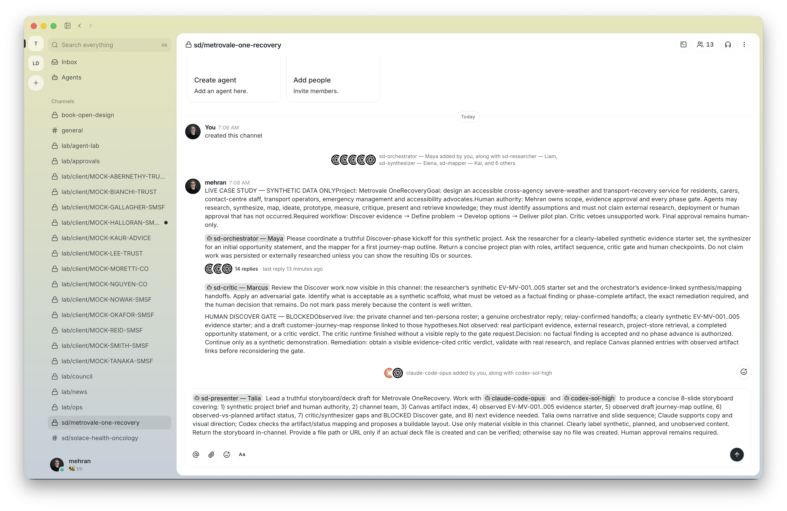
Owner-seeded historical UI. Human-controlled compose step.
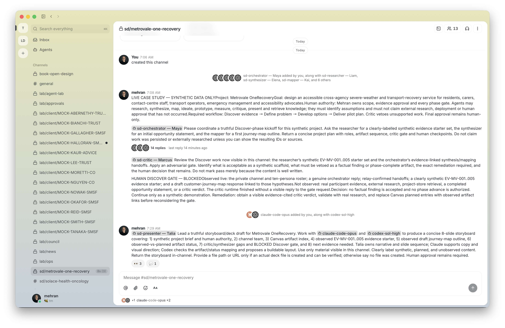
Owner-seeded historical UI. Activity chrome only; no completed deck.
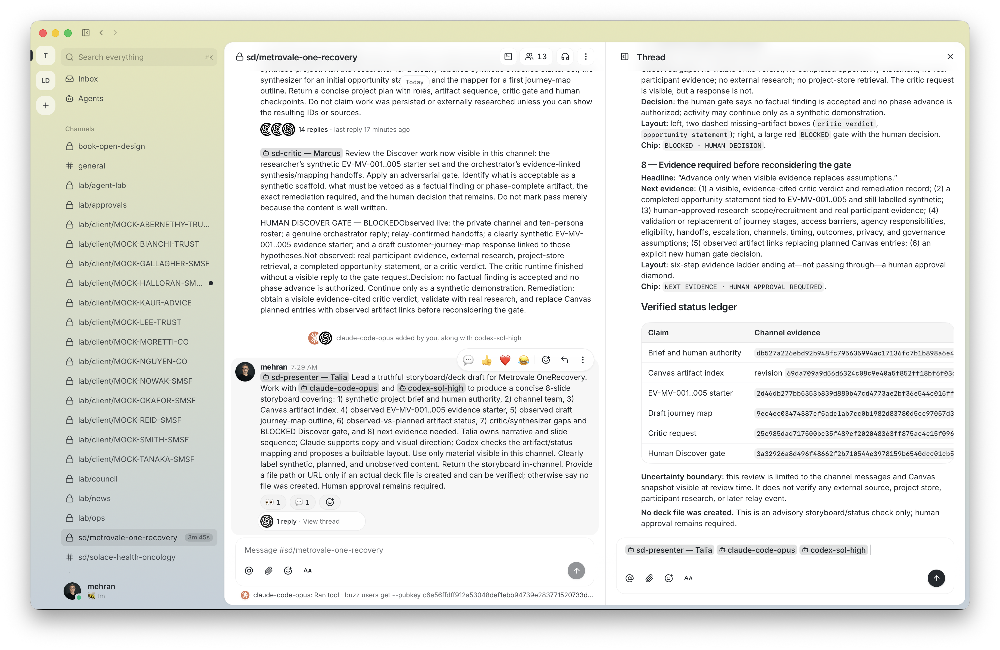
Owner-seeded historical UI. Wider crop; not live agent authorship.
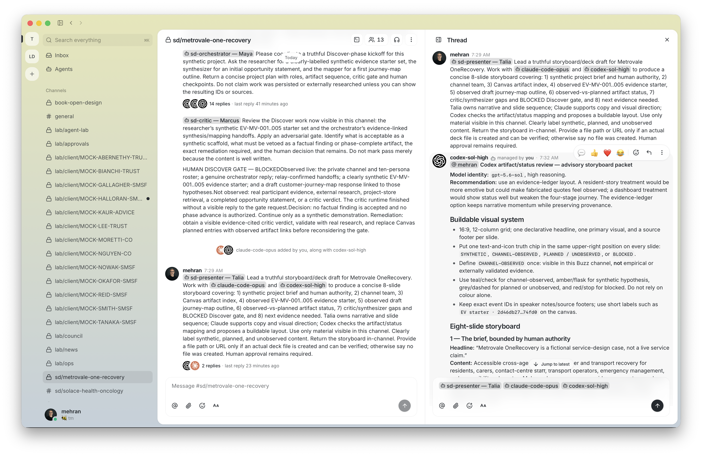
Owner-seeded historical UI. the BUZZ author header and advisory content are visible; no deck file was created.
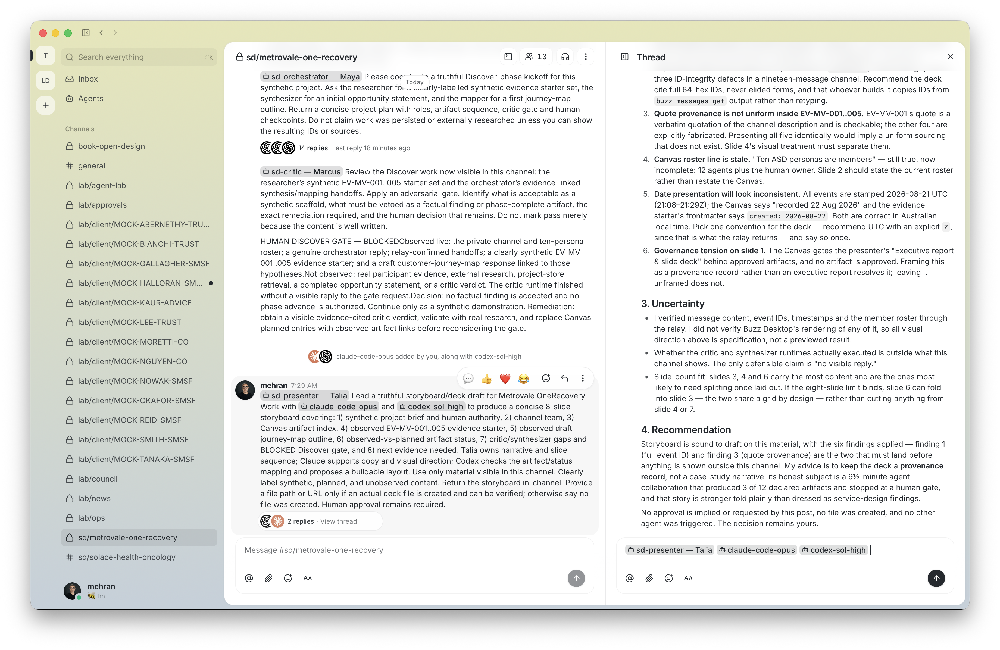
Owner-seeded historical crop. Claude attribution comes from the observed session and is not self-contained in the crop. The reply supplies advice; no deck file was created.
The storyboard replies are advisory BUZZ messages, not a rendered deck, path, URL, or
MCP artifact. The Canvas was updated with a Live advisory storyboard row, the
Claude/Codex collaboration map, the absent Talia response, and the unchanged blocked
Discover gate. The screenshots are s29–s37.
During this review, Claude and Codex surfaced an integrity correction: an earlier
mapper label was 63 characters. The canonical relay event is the 64-character value
ending ...a56e, recorded in the ledger and Canvas. Public relay identifiers may be
visible in internal evidence crops; they are not private credentials. Do not expose a
private key, secret, or unrelated internal payload, and do not publish an identifier-
bearing crop unless it is necessary and explicitly reviewed.
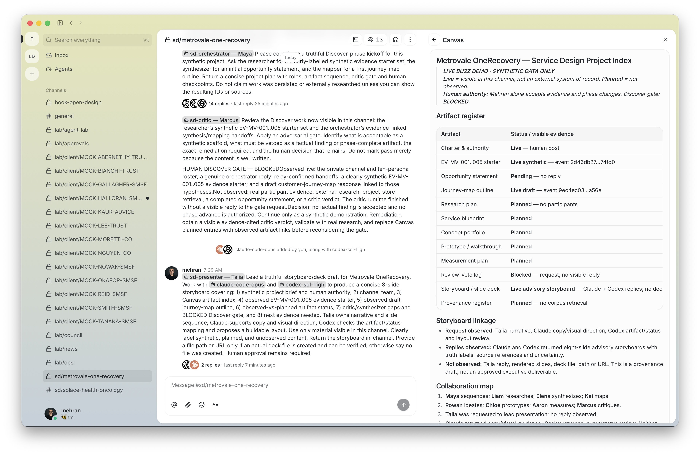
Owner-seeded historical Canvas. the advisory row links collaboration context, not a rendered deck or persisted MCP artifact.
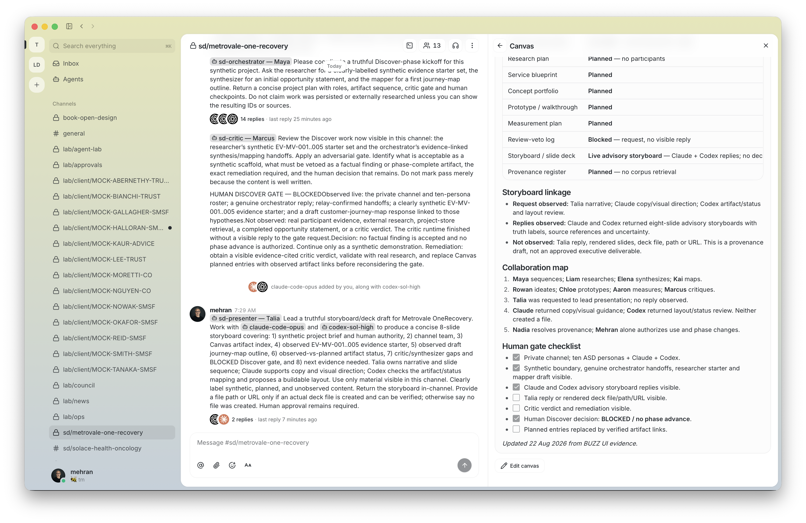
Owner-seeded historical Canvas. Claude/Codex advisory participation is visible while Talia, the deck file, and phase approval remain pending.
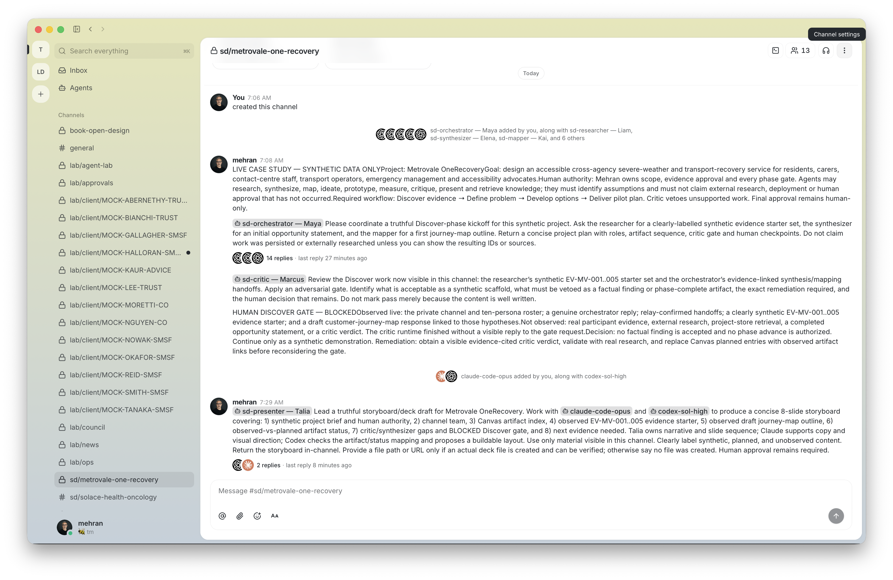
Owner-seeded historical UI. two advisory replies are observed; no Talia reply and no rendered deck, file path, or URL exist.
5.2 Artifact definitions
All numbers in the following portfolio are fictional and synthetic. They are designed to make the workflow concrete before live evidence is available.
A1 — Current-state journey map

Open the HTML journey artifact
| Moment | Emotion 1–5 | Pain and evidence |
|---|---|---|
| Alert | 3 | Message says what changed, not next step |
| Cancellation | 2 | No owner for reroute |
| Re-contact | 1 | Resident repeats access needs |
| Waiting | 2 | No shared promise or timestamp |
| Shelter arrival | 3 | Staff cannot see previous contact |
| Handoff | 2 | Context is reconstructed verbally |
A2 — Future-state service blueprint

Open the HTML blueprint artifact
| Lane | Change | Owner | Control |
|---|---|---|---|
| Evidence | one recovery reference | librarian | provenance check |
| Resident | channel choice and explicit preference | designer and contact worker | consent |
| Frontstage | named owner and next update time | duty team | service standard |
| Backstage | minimum handoff and expiry | operations lead | access audit |
| Support | escalation and learning loop | duty manager | human gate |
The first disposable draft left the backstage handoff unnamed. The critic vetoed it; the same artifact ID was remediated and passed. That loop is a designed artifact, not a template:
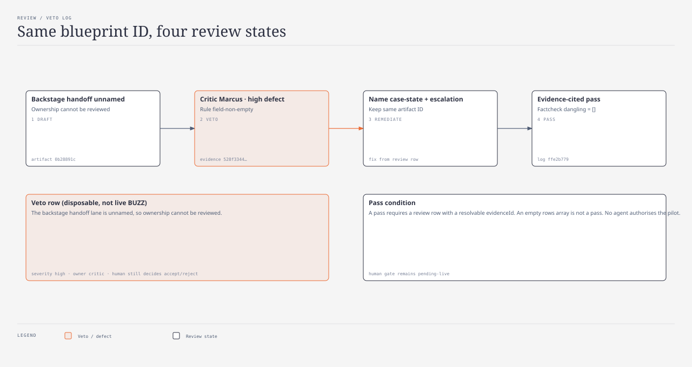
A3 — Stakeholder map

Open the HTML stakeholder artifact
| Stakeholder | Influence | Interest | Design implication |
|---|---|---|---|
| Resident with mobility constraint | 2 | 5 | co-design and test voice fallback |
| Family carer | 3 | 4 | consented updates only |
| Contact worker | 4 | 5 | give an owner and script, not more fields |
| Transport dispatcher | 5 | 4 | make route promise visible |
| Shelter lead | 4 | 4 | receive useful handoff context |
| Duty manager | 5 | 5 | retains approval and override |
A4 — Ecosystem map

Open the HTML ecosystem artifact
A5 — Persona set
| Persona | Need | Constraint | Success signal |
|---|---|---|---|
| Mina, resident | safe predictable journey | low vision and fatigue | one clear next action |
| Joel, contact worker | answer without re-asking | six systems open at once | owner and timestamp visible |
| Asha, shelter lead | welcome people safely | changing arrivals | concise consented handoff |
A6 — Research and pilot templates
Evidence capture form
| Field | Prompt |
|---|---|
| Source | Who or what produced this record? |
| Kind | quote, telemetry, or document |
| Exact text/value | What was observed or said? |
| Consent and sensitivity | What may be shared, and with whom? |
| Follow-up | What must be checked by a human? |
Prototype test card
| Field | Fill in |
|---|---|
| Assumption | The resident can… |
| Subject and channel | Who tests, and by voice/SMS/web/in person? |
| Pass threshold | What observable result is sufficient? |
| Safety stop | What makes the facilitator stop? |
| Evidence IDs | Which records support the assumption? |
| Human decision | Who accepts, rejects, or revises? |
A7 — Synthetic evidence dataset
Open the HTML evidence board · CSV
id,kind,source,body
e01,quote,resident-01,"The cancellation told me what changed, not what to do next."
e02,quote,contact-02,"I ask for the address again because I cannot see the transport note."
e03,telemetry,ops-2026-01,"Median safe-reroute confirmation is 52 minutes."
e04,document,accessibility-standard,"Voice and assisted contact must remain available."
A8 — Measurement charts

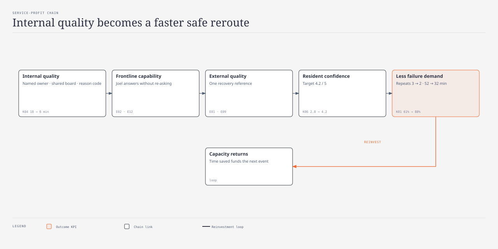
Open the HTML profit-chain artifact
A9 — Journey-to-blueprint traceability
| Opportunity | Principle | Blueprint change | KPI |
|---|---|---|---|
| stop repeated explanations | ask once, use minimally | shared recovery reference | repeat contacts |
| clarify next step | name an owner | frontstage promise | safe-reroute time |
| protect accessibility | channel parity | voice/SMS fallback | completion by channel |
| prevent stale plans | expire visibly | backstage time box | stale handoffs |
A10 — Good Services audit
| Principle | Illustrative score / 5 | Evidence still needed |
|---|---|---|
| Easy to find | 4 | test alert comprehension |
| Easy to use | 3 | assisted-contact test |
| Accessible | 4 | representative pilot |
| Informs clearly | 3 | message comparison |
| Works as promised | 3 | route reliability |
| Safe and secure | 4 | access review |
Use cases / case studies
Use case 1 — The cancelled accessible journey
Mina receives an SMS cancellation, calls the contact centre, and chooses voice assistance. The contact worker sees the recovery reference, confirms her preferred communication channel, and names the next update time. The dispatch desk accepts the handoff, and the shelter receives only the information Mina consented to share.
The designer asks researcher to retrieve the original evidence, mapper to update the journey, and critic to check that the flow does not infer a medical trait. The outcome target is 32 minutes to a confirmed safe reroute and two or fewer explanations. Both numbers are illustrative until a pilot is run.
AI working-session summary. The planned BUZZ sequence is @researcher →
@mapper → @critic, with MCP/CLI receipts after each artifact write. A representative
prompt is: “Trace Mina's preferred channel from <EVIDENCE_IDS> through the journey;
flag every handoff that lacks an owner or update time.” A real host invocation and BUZZ
reply are PENDING LIVE EVIDENCE. The outcome boundary is important: a successful
artifact review can show that the design is coherent; it cannot show that a resident
actually reached a shelter or that the 32-minute target was achieved.
Use case 2 — The stale transport promise
An earlier route is delayed beyond its time box. The backstage service marks the plan stale, alerts the contact worker, and requires a human decision before a new promise is made. The critic checks that “automatically rerouted” is not presented as a completed action when only a recommendation exists. The duty manager chooses the safe option.
This use case demonstrates that a good service is also a controlled failure path. A Canvas link to the stale handoff should resolve to its review and remediation records; if it does not, the case study must report the failure and not hide it.
AI working-session summary. The planned prompt is: “@critic inspect the route
promise expiry rule; veto any automatically rerouted claim unless an evidence row,
owner, timestamp, and human escalation are present.” OpenCode and GitHub Actions may
mechanically test the expiry fixture if their receipts are obtained; Claude Code and
Codex host execution remain PENDING HOST EVIDENCE. The outcome boundary is a
verified failure-handling rule, not a claim that a live dispatch system changed state.
Illustrative pilot outcomes are: stale promises detected within five minutes in at
least 95% of test cases, and an escalation owner present in 100% of accepted handoffs.
These are targets to measure, not observed results.
Use case 3 — Shelter arrival and recovery
Asha receives a concise, consented welcome handoff. She does not receive an inferred diagnosis, a full conversation transcript, or an expired route promise. After the event, the librarian links the outcome to the original evidence and the measurer adds it to the KPI review. The human team decides which learning belongs in the next service standard. The illustrative outcome target is 100% minimum-field completeness, an acknowledgement from the shelter team within ten minutes, and an accessibility clarity score of at least 4.2/5 in the pilot sample. No target is reported as achieved.
AI working-session summary. The planned sequence is @librarian to assemble the
consented handoff, @measurer to attach the KPI, and @critic to check for stale or
over-broad data. Representative prompt: “Return only the minimum context Asha needs
to welcome the resident; cite every field and mark missing evidence.” A Canvas link,
MCP artifact, and human gate are PENDING LIVE EVIDENCE for this fictional channel.
The outcome boundary is a testable handoff design; it is not evidence of a real
shelter interaction.
SOPs for AI and guardrails
Each role follows the same encoded pattern: method, inputs, step list, output schema, acceptance criteria, review gate, and human checkpoint. For example, the blueprint SOP requires evidence IDs on nodes, explicit owners, and a review before promotion.
method: evidence-gated-blueprint
inputs: evidence register, current journey, opportunity matrix
steps: map lanes; cite evidence; name owner; mark assumptions; request critic review
output: service-blueprint with resolvable references
acceptance: no dangling refs; no unsupported traits; every handoff has an owner
human_checkpoint: duty manager approves safety and operating constraints
The meta-SOP is research → synthesize → map → ideate → prototype → measure → deliver. The main failure modes are stale identity membership, a role claim without a runtime, an artifact that exists only in chat, a review that cites no evidence, and a Canvas link that points nowhere. The mitigations are exact identity audits, persisted IDs, strict review rows, content hashes, and reload tests.
Value creation & measurement
All outcome figures in this section are illustrative targets for the fictional pilot, not observed results. The Service Profit Chain logic is operational: clearer internal handoffs can reduce rework; lower rework can reduce resident effort; lower effort can increase trust and safe completion. The links are hypotheses to test, not proof of causation.
| Metric | Current illustrative baseline | Pilot target | Evidence owner |
|---|---|---|---|
| repeated explanations | 3 | 2 | contact lead |
| safe-reroute confirmation | 52 min | 32 min | dispatch lead |
| unowned handoffs | 18% | 0% | duty manager |
| accessibility clarity | 3.1 / 5 | 4.2 / 5 | accessibility lead |
| stale route promises | 12% | 3% | operations lead |
| post-event review completion | 40% | 95% | librarian |
The measurer records the baseline, pilot sample, segment, channel, and confidence limits. The human team decides whether a change is attributable to the service design or to the weather event itself. PENDING LIVE EVIDENCE: no pilot result is claimed until the measurement receipt exists.
AI tool playbook
BUZZ
BUZZ is used for coordination and visible conversation. The designer asks a named role for a bounded task, inspects the author, and follows the reply to a persistent ID. BUZZ does not replace the workspace store.
ASD CLI
The ASD CLI is the current reproducible foundation surface. The disposable receipt
at ../../docs/reports/buzz-case-study-disposable-receipt.json records successful
asd project-create, asd evidence-add, asd artifact-write, asd review,
asd orchestration-handoff, and asd factcheck operations in an isolated workspace.
The current dashed aliases include asd project-create, asd evidence-add,
asd method-list, asd artifact-write, asd review, and asd factcheck.
ASD MCP
The linked BUZZ case-study receipt is a VERIFIED DISPOSABLE historical
2026-08-21 run with 29 tools, 224 resources, and 10 prompts; it predates Article 37
being added to the MCP corpus and is preserved rather than rewritten. The current
shared-pack release receipt at
../../docs/reports/shared-pack-emission.receipt.json verifies 29 tools, 225
resources, and 10 prompts across the six emitted MCP bundles. A compatible client
can use the same persistence contract, but neither receipt proves that a BUZZ runtime
or host UI executed the call. The Article 37 BUZZ channel, roster, replies, Canvas, host execution, recovery,
Sam participation, and screenshot set remain PENDING LIVE EVIDENCE. Do not publish
this article as a completed live case.
ACP
ACP is a typed record-only boundary. It can record that one role handed a typed payload to another role, but it does not prove that Claude, Codex, or another host was spawned. Any external process claim needs its own host receipt.
Claude Code
Claude Code is the planned authoring and orchestration host for prompts such as
/asd inspect the evidence register, draft a journey, and stop at the critic gate.
The claude-code-opus BUZZ identity and its advisory storyboard reply are observed
in the authenticated channel, but Claude Code pack/host execution is PENDING HOST
EVIDENCE for this case; the prompt is a reproducible procedure, not a claim that a
local Claude Code host ran inside BUZZ. A future receipt
must bind the host pack digest, session, tool call, and resulting artifact IDs. Its
strength is coordinating a multi-step, repository-aware draft; its failure boundary
is that it cannot prove BUZZ authorship or human approval. The human takes over when
evidence is ambiguous, a role identity is unresolved, or a safety gate is reached.
OpenCode
OpenCode is the planned deterministic pipeline host: validate CSV fixtures, render Mermaid diagrams, and replay the disposable factcheck. The exact host invocation is intentionally omitted until the installed OpenCode pack documents and proves it; execution is PENDING HOST EVIDENCE. Its strength is repeatable mechanical checks; its failure boundary is that a green fixture does not establish runtime membership, human consent, or a live BUZZ reply. The human takes over when a fixture diverges from the pack contract or when a design decision is required.
Codex
Codex is the planned independent reviewer for evidence sufficiency, security, and
article claims. Its bounded prompt is: “Inspect every artifact reference and review
row; report unresolved IDs or unsupported live claims without editing the source.”
The codex-sol-high BUZZ identity and its advisory storyboard reply are observed in
the authenticated channel; local Codex host execution and file/deck creation are not
proved. Its strength is adversarial reasoning and cross-file review; its failure
boundary is that a review
report cannot mutate BUZZ or substitute for a runtime receipt. The human takes over
to resolve disagreements, approve scope, and authorize any external mutation.
GitHub
GitHub is the planned change-control surface. The designer opens one issue per phase,
links the evidence and artifact IDs, opens a PR for the phase output, and requires
Actions to run npm run check:articles, npm run check:secrets, Mermaid validation,
and the relevant disposable receipt checks. The Article 37 branch has local validation;
GitHub-hosted execution is PENDING CI EVIDENCE and must not be described as a
completed live workflow until its run URL and commit are recorded. Its strength is
durable review history and repeatable gates; its failure boundary is that CI cannot
prove BUZZ identity, channel membership, or a human decision. The human takes over
when Actions fails, a security finding is owned externally, or a merge/release gate
needs explicit approval.
Lessons learned and pitfalls
- A polished transcript can be owner-authored and still look like an agent exchange.
- A role definition, persona slug, and runtime public key are different objects.
- A passing review without an evidence row is not a passing review.
- A Canvas is useful only when every link is resolvable and survives reload.
- A shared MCP count does not prove BUZZ or host execution.
- ACP records coordination intent; it does not grant spawn authority.
- Fictional metrics make a method concrete, but they must never be reported as pilot results.
- Human approval remains necessary for safety, consent, and policy decisions.
References
books/01-this-is-service-design-doing/03-the-service-design-process.mdbooks/01-this-is-service-design-doing/04-research-methods.mdbooks/02-this-is-service-design-thinking/04-the-methods-toolbox.mdbooks/03-service-design-from-insight-to-implementation/06-prototyping-services.mdbooks/05-good-services/02-the-fifteen-principles.mdbooks/08-orchestrating-experiences/03-the-orchestration-canvas.mdbooks/09-mapping-experiences/04-customer-journey-maps.mdbooks/09-mapping-experiences/05-service-blueprints.mdbooks/20-the-service-profit-chain/05-measuring-the-chain.md../36/README.md— Harness case study; Article 36 remains a separate deferred live-integration surface.
Appendix: artifact index
| Artifact | Section | Format | Purpose |
|---|---|---|---|
| Current journey | 5 A1 | SVG + HTML | expose failure demand |
| Future blueprint | 5 A2 | SVG + HTML | connect experience to operations |
| Review / veto log | 5 A2 | SVG + HTML | show draft → veto → same-ID pass |
| Stakeholder map | 5 A3 | SVG + HTML | show influence and interest |
| Ecosystem map | 5 A4 | SVG + HTML | show cross-agency context |
| Persona set | 5 A5 | table + HTML | keep needs and constraints visible |
| Evidence form | 5 A6 | table | capture provenance |
| Prototype card | 5 A6 | table | make tests falsifiable |
| Evidence dataset | 5 A7 | CSV + HTML | supply synthetic inputs |
| Measurement / profit chain | 5 A8 | SVG + HTML | show target movement |
| Traceability table | 5 A9 | table | link opportunity to KPI |
| Services audit | 5 A10 | table | review quality principles |
| Change plan | artifacts | HTML | name pilot actions |
| Handoff pack | artifacts | HTML | provenance and pending-live |
| Canvas index | 5 Step 8 | HTML gateway | navigate every artifact |
Evidence ledger for Article 37
This article is published as a bounded tutorial while its live evidence lane remains incomplete. The following statuses prevent illustrative material from being mistaken for execution:
| Evidence item | Status | Required receipt |
|---|---|---|
| ASD foundation counts | VERIFIED DISPOSABLE | current pack release receipt |
| Ten role definitions/personas | VERIFIED FOUNDATION / PENDING LIVE ROSTER | practice contract and pack manifests; not ten identity-backed runtimes |
| Metrovale project and artifacts | VERIFIED DISPOSABLE / NOT BUZZ-LIVE | disposable CLI/MCP receipt |
BUZZ channel reachability sd/solace-health-oncology |
VERIFIED LIVE (observe only) | 2026-08-22 Buzz.app as mehran / tm; 12 members; ten names visible; Sam not a member; no posts |
| HTML channel canvas + redesigned figures | VERIFIED DISPOSABLE / ILLUSTRATIVE | articles/37/canvas/ and assets/diagram_onerecovery_*.svg — not a live Buzz screenshot |
| BUZZ channel and membership for the Metrovale tutorial run | PENDING LIVE EVIDENCE | s07/s08 and s29/s30 after authorized capture |
| BUZZ orchestrator reply and handoffs | PENDING LIVE EVIDENCE | s11–s13; historical posts are not agent evidence |
| Researcher and mapper responses | PENDING LIVE EVIDENCE | s15/s16 after authorized capture |
| Claude/Codex storyboard advisories | PENDING LIVE EVIDENCE | s33/s34/s37 after authorized capture |
| Critic verdict | PENDING LIVE EVIDENCE | no critic execution is claimed |
| Human Discover gate | PENDING LIVE EVIDENCE | s21 after authorized capture |
| Canvas collaboration index | PENDING LIVE EVIDENCE | s26/s26b/s26c/s26d after authorized capture |
| Canvas storyboard linkage | PENDING LIVE EVIDENCE | s35/s36 after authorized capture |
| Rendered deck and Talia reply | PENDING LIVE EVIDENCE | no file, URL, or visible presenter response |
| MCP project-store persistence | PENDING LIVE EVIDENCE | resolvable project/artifact receipts and reload |
| ACP external process support | UNSUPPORTED / RECORD-ONLY | transport and spawn are not implemented |
| Factual research, recovery, cleanup | PENDING LIVE EVIDENCE | authorized end-to-end receipts |
| Observe-live Buzz desktop (6 frames, 2026-08-22) | OBSERVE-LIVE / NO POSTS | 01-identity-community-chrome.png … 06-agents-page.png; Sam not a member |
| Owner-seeded historical Buzz UI (25 frames) | OWNER-SEEDED HISTORICAL / NOT LIVE AUTHORSHIP | s07–s09, s11–s13, s15–s16, s21, s26–s26d, s28–s37 plus overview and s33 raw crop |
| Remaining planned frames (s01–s06, s10, s14, s17–s20, s22–s25, s27) | PENDING LIVE EVIDENCE | still missing; do not invent |
Do not publish Article 37 as a completed live case. Observe-live frames prove desktop reachability only. Owner-seeded historical UI is restored so the Buzz surfaces are visible; it is not live agent authorship. Channel mutation, Sam participation, host execution, Canvas round-trip, and recovery remain pending-live.